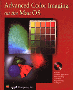

Advanced Color Imaging
From this web page you can gain access to Apple Computer's official documentation for enhancing your software's color capabilities. In addition to supplying you with the conceptual and reference documentation that will help you incorporate Mac OS advanced color imaging technologies into your software, this web page gives you access to archives of previous versions of this documentation; this page also provides hyperlinks to other web sites related to Mac OS color imaging capabilties.Apple Computer has prepared two major developer guides that explain how you can augment the color support supplied with QuickDraw and Quickdraw GX; these guides are

- Advanced Color Imaging on the Mac OS, which provides conceptual information and code samples, with step-by-step instructions for extending your application's color capabilities.
- Advanced Color Imaging Reference, which describes the functions, data types, constants, and resources your application uses to work with color on the Mac OS.
- use the Palette Manager to provide the best set of colors on displays with limited color capabilities
- solicit color choices from users with the Color Picker Manager
- use the ColorSync Manager to match colors betweeen screens and input and output devices such as scanners and printers
- learn how the Color Manager assists Color QuickDraw in mapping an application's color requests to the actual colors available
New! Revised for ColorSync 2.1
 The electronic
versions of Advanced Color Imaging on the Mac OS and
Advanced Color Imaging Reference have been revised to
include detailed descriptions of new features in ColorSync 2.1,
along with additional sample code. These electronic books also
contain minor corrections to previous material about the
Palette Manager, the Color Picker Manager, and the Color
Manager. The document What's New in
Advanced Color Imaging on the Mac OS describes the
revisions made to the electronic versions of these books and
provides hypertext links to new and modified material in those
books. (Archives of the previous
versions of these books are also available.)
The electronic
versions of Advanced Color Imaging on the Mac OS and
Advanced Color Imaging Reference have been revised to
include detailed descriptions of new features in ColorSync 2.1,
along with additional sample code. These electronic books also
contain minor corrections to previous material about the
Palette Manager, the Color Picker Manager, and the Color
Manager. The document What's New in
Advanced Color Imaging on the Mac OS describes the
revisions made to the electronic versions of these books and
provides hypertext links to new and modified material in those
books. (Archives of the previous
versions of these books are also available.)
Availability
Click below to obtain advanced color imaging documentation in any of the following formats.| Advanced Color Imaging on the Mac OS |
Direct access: web pages
|
Acrobat (7555K)
|
Quickview (1.2MB)
|
|||||
| Advanced Color Imaging Reference |
Direct access: web pages
|
Acrobat (7555K)
|
Quickview (1.2MB)
|
Archives
In case you need to reference them, the previous versions of Advanced Color Imaging on the Mac OS and Advanced Color Imaging Reference are also available.Related Information
The following related web pages can provide additional assistance in your development efforts:- SDK for ColorSync 2.1
- the official Apple ColorSync web site
- develop article: "Print Hints: Synching Up with ColorSync 2.0"
- The Internation Color Consortium Profile Format Specification